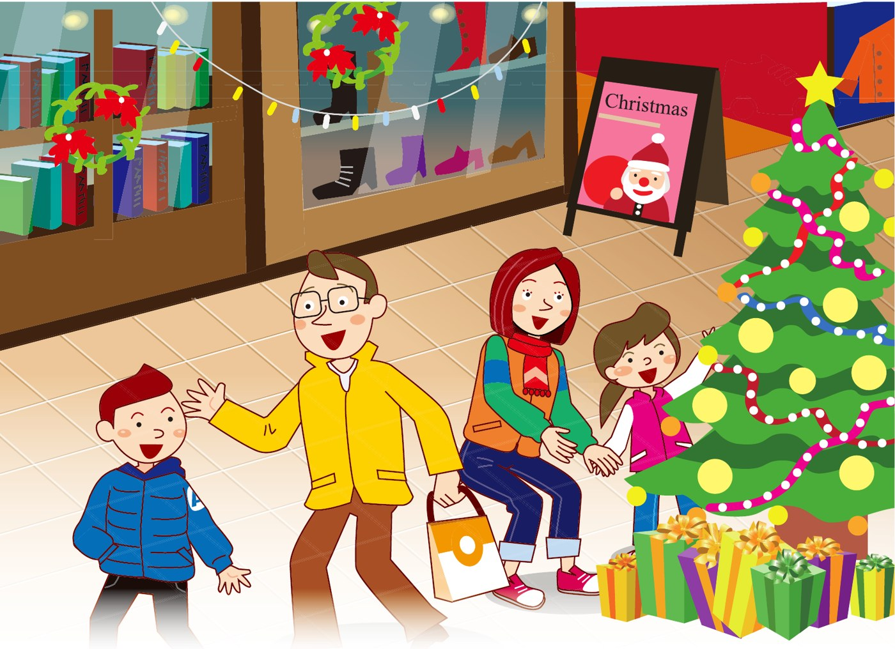
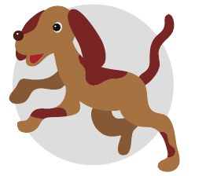

學華語向前走 3A ｜ 課本第 92–103 頁
第六課 聖誕節快到了
Dì liù kè · Shèngdànjié kuài dào le

代課老師先看（不用給學生看）
- 這個網頁照上課順序排好，從上往下教就可以。上方的時間列會標出現在該上哪一段。
- 有喇叭按鈕的地方，按一下電腦就會念中文。「拼音」按鈕可以關掉拼音。
- 2:10 一到，不管進度，一定開始遊戲。時間不夠時：先刪「數一數教室」，造句改成每人一句，課文問答只問前 5 題。
- 需要準備：課本（第 92–103 頁）、白板和白板筆、喇叭（播放課文影片用）。
- 學生說錯時，先說一次正確的句子，再請他跟著說，不用停下來講文法。
- 第 95 頁的習寫漢字、第 99–101 頁的練習這次都不教。
今天我們要學會…
Jīntiān wǒmen yào xuéhuì…1. 用「好」說很多、很大、很可愛
yòng “hǎo” shuō hěn duō, hěn dà, hěn kě’ài
2. 用「就是」說什麼時候快到了
yòng “jiù shì” shuō shénme shíhou kuài dào le
3. 會用量詞：棵、輛、隻、張、個
kē, liàng, zhī, zhāng, ge
4. 說出我想要的聖誕禮物
shuō chū wǒ xiǎng yào de shèngdàn lǐwù
老師備忘
- 問好：「大家好！我是今天的代課老師，我姓＿＿。」
- 暖身：「聖誕節是幾月幾號？」（十二月二十五號）「你們喜歡聖誕節嗎？」
- 四個目標念一遍，學生跟念。告訴學生最後 20 分鐘要玩「我看到…」和「老師說」。
課文與生詞
kèwén yǔ shēngcí① 先看生詞
Xiān kàn shēngcí12:45–12:50 ｜ 課本第 94 頁老師念 → 學生跟念 2 次
Lǎoshī niàn → xuéshēng gēn niàn 2 cì
再請每位學生念一排
Zài qǐng měi wèi xuéshēng niàn yì pái
注意這幾個字
Zhùyì zhè jǐ ge zì
都是量詞，等一下會用到！
Dōu shì liàngcí, děng yíxià huì yòng dào!
老師備忘：意思快速帶過
- 好 hǎo ＝ quite / so（好多、好漂亮）；平常 píngcháng ＝ normally
- 就是 jiù shì ＝ is（下個月就是聖誕節）；掛 guà ＝ hang
- 聽話 tīnghuà ＝ 乖；寄 jì ＝ mail, send
- 棵 kē（樹）、輛 liàng（車）、隻 zhī（動物、襪子）
② 先聽一遍課文
Xiān tīng yí biàn kèwén12:50–12:53聖誕節快到了
大文一家人在百貨公司。仔細聽，他們說了什麼？
Dàwén yì jiā rén zài bǎihuò gōngsī. Zǐxì tīng!
聲音是電腦的中文語音。「跟讀」會在每句後面停下來，讓學生跟著念。
老師備忘
- 第一次：學生只聽、不看課本。聽完問：「他們在哪裡？」（百貨公司）「誰想要玩具車？」（大文）
- 第二次可以開「跟讀」，每句停下來讓學生跟著念。
- 電腦念得太快，就開「慢速」。如果沒有聲音，影片會照字幕自動播放，請老師幫忙念。
先把課文影片聽完一遍，再開始練習
Xiān tīng wán, zài liànxí
③ 分角色朗讀
Fēn jiǎosè lǎngdú12:53–1:00 ｜ 課本第 92–93 頁| 第幾次 dì jǐ cì | 大文 Dàwén | 媽媽 Māma | 文文 Wénwen | 爸爸 Bàba |
|---|---|---|---|---|
| 第 1 次 | 學生 A | 學生 B | 學生 C | 老師 |
| 第 2 次 | 老師 | 學生 A | 學生 B | 學生 C |
| 第 3 次 | 學生 C | 老師 | 學生 A | 學生 B |
老師備忘：逐句理解
- 朗讀前先決定誰是學生 A、B、C，寫在白板上。學生只有 3 位，老師也演一個角色。
- 每念完一句，問一個問題，例如：「今天人多不多？」「文文看到什麼？」「燈要掛在哪裡？」（可以指窗戶，只指不碰）
- 好多＝很多；棵：數樹；彩色＝很多顏色；輛：數車；聽話＝很乖；張：數紙、卡片、照片；寄＝mail；隻：數動物，也用在襪子。
④ 你記得嗎？
Nǐ jìde ma?1:00–1:10老師備忘
- 三位學生輪流回答，先讓學生說，再按「看答案」。要用完整的句子回答。
- 第 8 題三個人都要回答，提醒他們用量詞：一輛腳踏車、一隻小狗。
⑤ 用生詞回答我
Yòng shēngcí huídá wǒ1:10–1:15| 生詞 | 老師問 | 參考答案 |
|---|
句型
jùxíng休息 10 分鐘
xiūxi shí fēnzhōng
回來以後，我們要學量詞：棵、輛、隻、張、個！
Huílái yǐhòu, wǒmen yào xué liàngcí: kē, liàng, zhī, zhāng, ge!
量詞活動
liàngcí huódòng① 五個量詞
Wǔ ge liàngcí1:45–1:49② 念一念、填一填
Niàn yi niàn, tián yi tián1:49–1:54 ｜ 課本第 98 頁③ 一起念一念
Yìqǐ niàn yi niàn1:54–1:58 ｜ 課本第 102 頁① 老師念，大家跟念
Lǎoshī niàn, dàjiā gēn niàn
② 一個人念一排
Yí ge rén niàn yì pái
③ 老師指圖，你說出來
Lǎoshī zhǐ tú, nǐ shuō chūlái
④ 把「一」換成別的數字！
Bǎ “yī” huàn chéng bié de shùzì!
兩個人、三個人、十個人…
liǎng ge rén, sān ge rén, shí ge rén…
④ 有幾個？說說看！
Yǒu jǐ ge? Shuō shuo kàn!1:58–2:06
2
數字 2 要說「兩」：兩隻狗 ✔ 二隻狗 ✘
老師備忘
- 三位學生輪流，一人說一題，要說「數字＋量詞＋東西」。說對再按「看答案」。
- 加快一點：最快說對的學生得 1 分。也可以請學生當老師，換他按「下一題」考別人。
⑤ 連連看
Lián lian kàn2:06–2:08 ｜ 課本第 103 頁⑥ 數一數教室
Shǔ yi shǔ jiàoshì2:08–2:10 ｜ 時間夠才做只能看、只能指，不能碰！ Zhǐ néng kàn, zhǐ néng zhǐ, bù néng pèng!
遊戲時間
yóuxì shíjiān遊戲一：我看到…
Wǒ kàndào…2:10–2:20老師 lǎoshī
我看到一個紅色的東西！
Wǒ kàndào yí ge hóngsè de dōngxi!
學生 xuéshēng
是那個＿＿嗎？
Shì nà ge ＿＿ ma?
老師 lǎoshī
對！／不對，再猜一次！
Duì! / Bú duì, zài cāi yí cì!
不能碰！
Zhǐ néng kàn, zhǐ néng zhǐ, bù néng pèng!
Look and point only. No touching!
什麼顏色？ Shénme yánsè?
老師備忘
- 先請學生跟著說一次：「只能看、只能指，不能碰！」
- 老師先出題，猜對的學生下一輪出題。進階：用量詞，「我看到一張白色的東西」。
- 有學生去碰東西，就暫停一回合，重說規則。
遊戲二：老師說
Lǎoshī shuō2:20–2:30聽到「老師說」才做，沒聽到就不要動！ Tīngdào “lǎoshī shuō” cái zuò, méi tīngdào jiù bú yào dòng!
按「出題」開始
全部指令（老師也可以自己念）
聖誕節快樂！再見！
Shèngdànjié kuàilè! Zàijiàn!
下課前
- 請每位學生說一個今天學的量詞詞組，例如「一棵樹」。
- 留言給原來的老師：今天上到哪裡、哪一部分沒做完、學生的表現。